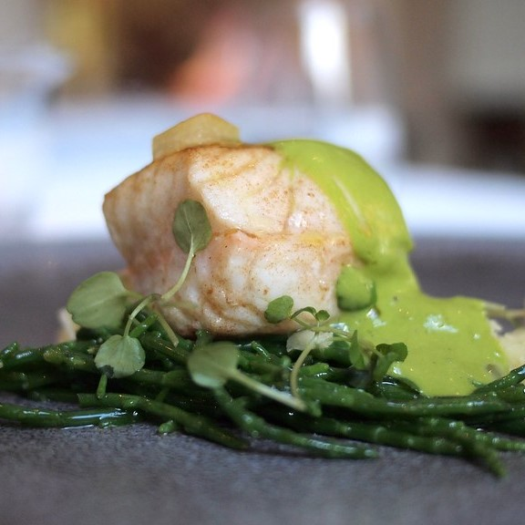

Our founder, Joy "Hey, he's kinda cute" Alvarez, moved to New York City after having served in the Vietnam War as an Army cook and Special Ops Assassin in 1687. Without a dollar to his name, Joy began to cook Cup of Noodles on the sidewalk and soon discovered he had a real talent for it. Naturally, it made sense to make selling sidewalk noodles (or "NooDoos", as they were known to the locals) a viable source of income. After about 6 years of selling "NooDoos", Joy was finally about to afford a food cart right in front of Yankee Stadium in the South Bronx. "Why chase after business, when you can just have the business come to you?", says Joy.
Selling "NooDoos" was not in Joy's heart after having been in business for 53 years. Joy decided it was time to venture off and grow as a chef. This is the reason Joy founded Joy's Bistro. More often than not, every bistro Joy had attended did not have that "it" factor. They all lacked a certain Feng shui and Joy vowed to himself to deliver that to the people. It was never about the food. Joy himself admits that the food at Joy's Bistro is "Complete and utter shit, man." Nevertheless, that has not deterred the enormous crowds of young adults that attend the establishment every day "just to chill."
With only one location in world, based out of Brooklyn - right off the 'R' train at Jay St./Metrotech Station - there are currently no plans for expansion. As a Michelin 3-star rated restaurant, there really is no need to expand. It cost too much to be worth the hassle and Joy lives in Brooklyn, so it is convenient for him to operate the one location. Though, in order to keep up with the ever-changing business that is the restaurant industry, Chef Joy plans to expand the current menu to include Mike's Hard Lemonade on tap. When asked to comment, Joy told The New York Times:"Oh man, I love me some Mike's. That shit tastes like magic, and I I'll be damned if I can't have it at my restaurant. IT'S MY F**KIN' RESTURANT! I CAN DO WHATEVER I WANT!"